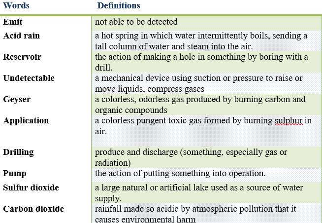
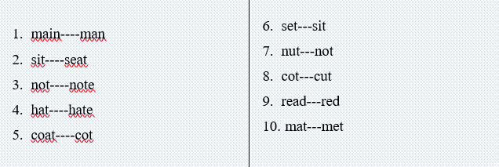
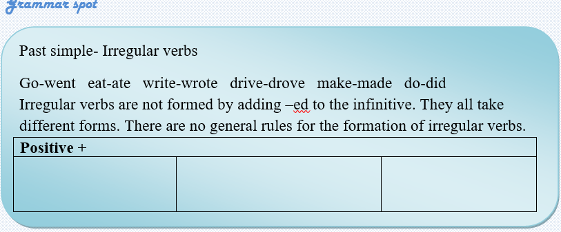
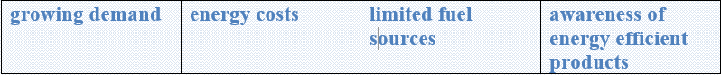
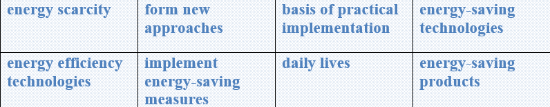

What is geothermal energy?
Geothermal energy is heat within the earth. The word geothermal comes from the Greek words geo (earth) and therme (heat). Geothermal energy is a renewable energy source because heat is continuously produced inside the earth. People use geothermal heat for bathing, to heat buildings, and to generate electricity.
Where geothermal energy is found
Geothermal reservoirs are naturally occurring areas of hydrothermal resources. These reservoirs are deep underground and are largely undetectable above ground. Geothermal energy finds its way to the earth's surface in three ways:
🔹 Volcanoes and fumaroles (holes in the earth where volcanic gases are released)
🔹 Hot springs
🔹 Geysers
Use of geothermal energy
Some applications of geothermal energy use the earth's temperatures near the surface, while others require drilling miles into the earth. There are three main types of geothermal energy systems:
🔹 Direct use and district heating systems
🔹 Electricity generation power plants
🔹 Geothermal heat pumps
Geothermal power plants have low emission levels
Geothermal power plants do not burn fuel to generate electricity, but they may release small amounts of sulfur dioxide and carbon dioxide. Geothermal power plants emit 97% less acid rain-causing sulfur compounds and about 99% less carbon dioxide than fossil fuel power plants of similar size.
Task1 Reading
Fill the gaps with appropriate ideas from the text.

Task2 Reading
Read the text and answer the given questions.
What does “geothermal” mean?
Where is heat produced?
For what purposes do people use geothermal energy?
Are reservoirs detectable above the ground?
In what ways does geothermal energy come?
What are three main types of geothermal energy?
Task3 Reading
Read the text again and complete the gaps with the ideas from the text.
Geothermal energy is___________________________________________.
“Geo” means___________________________________________ in Greek.
The meaning of “therme” in Greek is_______________________________.
Geothermal energy is used for____________________________________.
Fumaroles are holes_____________________________________________.
Geothermal power plants may release______________________________.
Task4 Listening
Listen and circle the words you hear


Task5 Writing
✔️Learn the given lexical units.
✔️ Work in groups and explain the meanings of the given lexical units.
✔️ Try to use them in sentences.


Read the case and give some solutions
There is highly growing demand for energy and relatively the energy costs are increasing. Limited fuel sources today are causing energy scarcity affecting the whole world. It is considerably important to form new approaches and the basis of practical implementation of modern energy-saving technologies.
It is vital to be aware of the cost-effective and environmentally responsible ways of using energy efficiency technologies. One of those challenges that people are facing nowadays is lack of awareness among consumers, businesses and policymakers. It is hard for them to understand how to implement energy-saving measures in their daily lives and operations. Consequently, the demand for energy-saving products and services remains relatively low.
Suggest some efficient ways of increasing the awareness of energy efficient products and services among consumers, businesses and policymakers.
What does “energy efficiency technology” mean?
What is the problem with energy scarcity?
How serious is this situation?
What is the cause of this problem?
How it is successfully solved?
What is the most optimal solution?
Can present some tips on improving the situation?